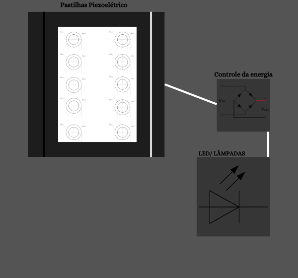

Geração de Energia Piezoelétrica
Planta baixa exemplo de instalação dos pisos Piezoelétricos

Para o arquivo completo em PDF: Baixar PDF
Protótipo e Desenho técnico
Este protótipo contém um modelo do piso piezoelétrico. Essa sequência contém detalhes suficientes para o estudo de caso.
Piso gerador
O Modelo de Piezoelétrico foi pensado para trazer mais clareza a respeito da quantidade e planejamento das junções elétricas para que a energia seja captada e distribuída da melhor maneira.
- 20 Pastilhas Piezoelétricas de 27 mm, ou semelhantes
- Suporte ou estrutura semelhante a um piso real
- Fios de cobre
- Ponte retificadora
- 4 diodos
- 1 capacitor
- 1 resistor
Explicação da ligação dos elementos: Os passos a se tomar para contruir a unidade do piso consistem em, contruir uma espécie de "prancha" que adeque segurança, aderencia e estratégias para que quando o piso entre em contato com a "prancha" ela receba o impacto transportanto as cargas elétricas sem danificar as pastilhas.
Após a escolha dos materiais necessários, é hora de montar as pastilhas. Para ganho de corrente as pastilhas devem ser montadas em paralelo , para o ganho de voltagem devem ser montadas em série. A forma utilizada no projeto foi uma ligação mista para o aproveitamento da energia gerada pela pastilha.
Com as pastilhas posicionadas e fixadas sobe a prancha, todos os fios devidamente ligados, a saída de energia das pastilhas são de forma alternada. Em AC , as cargas fluem de maneira livre, para que nossa unidade de iluminação funcione precisamos converte-la em contínua (DC). Para isso, será utilizada uma ponte retificadora na saída dos terminais das pastilhas.
Após isso, o terminais polarizados da retificadora levarão a energia para os leds. Quanto a iluminação gerada pelo piso, podem ser utilizados diversos modelos, a ideia é usar a criatividade. Esta iluminação exemplifica oque uma unidade do piso pode gerar para manter iluminado um corredor, rampa ou escadas de universidades e escolas.
O Protótipo poderá ser atualizado posteriormente, recebendo um Sistema de baterias leds maiores e até micro controladores. Qualquer atualização será incluída neste site, para entrar em contato ,clique aqui!